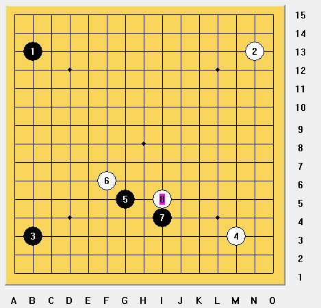

五子棋的毒瘤（分析在全团赛之后）
#1 <font color="red">五子棋的毒瘤（分析在全团赛之后）</font> 作者：清缘 发表时间：2013-5-11 19:28:34
2013全国五子棋团体赛结束，首先恭喜棋心、湖北夺得冠军，炫飞得到男、女子亚军。［ 釣鱼岛岛主 于 2013-5-11 20:08:11 时花20金币送鲜花一朵］
［ 釣鱼岛岛主 于 2013-5-11 20:08:11 时花20金币送鲜花一朵］
［ 我是裁判 于 2013-5-11 20:15:50 时花20金币送鲜花一朵］
［ 我是裁判 于 2013-5-11 20:15:50 时花20金币送鲜花一朵］
［ 我是裁判 于 2013-5-11 20:15:50 时花20金币送鲜花一朵］
［ 我是裁判 于 2013-5-11 20:15:50 时花20金币送鲜花一朵］
［ 我是裁判 于 2013-5-11 20:15:50 时花20金币送鲜花一朵］
［ 我是裁判 于 2013-5-11 20:15:50 时花20金币送鲜花一朵］
［ 我是裁判 于 2013-5-11 20:15:50 时花20金币送鲜花一朵］
［ 我是裁判 于 2013-5-11 20:15:50 时花20金币送鲜花一朵］
［ 我是裁判 于 2013-5-11 20:15:50 时花20金币送鲜花一朵］
［ 我是裁判 于 2013-5-11 20:15:50 时花20金币送鲜花一朵］
［ 无尽 于 2013-5-11 20:21:18 时奖励此帖[金币加 100 威望加1］
［ 踵酃 于 2013-5-11 22:01:15 时花20金币送鲜花一朵］
［ 小红眼镜 于 2013-5-11 22:42:55 时花20金币送鲜花一朵］
［ 屏蔽 于 2013-5-11 22:45:15 时奖励此帖[金币加 100 威望加1］
［ 屏蔽 于 2013-5-11 22:45:28 时花20金币送鲜花一朵］
［ 屏蔽 于 2013-5-11 22:45:28 时花20金币送鲜花一朵］
［ 圊籽 于 2013-5-12 9:07:21 时花20金币送鲜花一朵］
［ 钟梦 于 2013-5-12 10:49:50 时花20金币送鲜花一朵］
［ 失落刀 于 2013-5-12 11:28:15 时花20金币送鲜花一朵］
［ 失落刀 于 2013-5-12 11:28:15 时花20金币送鲜花一朵］
［ 失落刀 于 2013-5-12 11:28:15 时花20金币送鲜花一朵］
［ 失落刀 于 2013-5-12 11:28:15 时花20金币送鲜花一朵］
［ 失落刀 于 2013-5-12 11:28:15 时花20金币送鲜花一朵］
［ 失落刀 于 2013-5-12 11:28:15 时花20金币送鲜花一朵］
［ 失落刀 于 2013-5-12 11:28:15 时花20金币送鲜花一朵］
［ 失落刀 于 2013-5-12 11:28:15 时花20金币送鲜花一朵］
［ 失落刀 于 2013-5-12 11:28:15 时花20金币送鲜花一朵］
［ 失落刀 于 2013-5-12 11:28:15 时花20金币送鲜花一朵］
［ 失落刀 于 2013-5-12 11:28:15 时花20金币送鲜花一朵］
［ 失落刀 于 2013-5-12 11:28:15 时花20金币送鲜花一朵］
［此帖子已被 屏蔽 在 2013-5-12 19:36:36 编辑过］
［ 佐小伊 于 2013-5-13 12:51:35 时花20金币送鲜花一朵］
［ 佐小伊 于 2013-5-13 12:51:35 时花20金币送鲜花一朵］
［ 佐小伊 于 2013-5-13 12:51:35 时花20金币送鲜花一朵］
［ 佐小伊 于 2013-5-13 12:51:35 时花20金币送鲜花一朵］
［ 佐小伊 于 2013-5-13 12:51:35 时花20金币送鲜花一朵］
［ 佐小伊 于 2013-5-13 12:51:35 时花20金币送鲜花一朵］
［ 佐小伊 于 2013-5-13 12:51:35 时花20金币送鲜花一朵］
［ 佐小伊 于 2013-5-13 12:51:35 时花20金币送鲜花一朵］
［ 佐小伊 于 2013-5-13 12:51:35 时花20金币送鲜花一朵］
［ 超级天逸超人 于 2013-5-13 20:18:12 时花20金币送鲜花一朵］
［ 超级天逸超人 于 2013-5-13 20:18:12 时花20金币送鲜花一朵］
［ 超级天逸超人 于 2013-5-13 20:18:12 时花20金币送鲜花一朵］
［ 超级天逸超人 于 2013-5-13 20:18:12 时花20金币送鲜花一朵］
［ 超级天逸超人 于 2013-5-13 20:18:12 时花20金币送鲜花一朵］
［ 冰雪笑醉 于 2013-5-14 14:00:41 时花20金币送鲜花一朵］
［ 冰雪笑醉 于 2013-5-14 14:00:41 时花20金币送鲜花一朵］
［ 冰雪笑醉 于 2013-5-14 14:00:41 时花20金币送鲜花一朵］
［ 冰雪笑醉 于 2013-5-14 14:00:41 时花20金币送鲜花一朵］
［ 冰雪笑醉 于 2013-5-14 14:00:41 时花20金币送鲜花一朵］
［ 冰雪笑醉 于 2013-5-14 14:00:41 时花20金币送鲜花一朵］
［ 冰雪笑醉 于 2013-5-14 14:00:41 时花20金币送鲜花一朵］
［ 冰雪笑醉 于 2013-5-14 14:00:41 时花20金币送鲜花一朵］
［ 冰雪笑醉 于 2013-5-14 14:00:41 时花20金币送鲜花一朵］
［ 冰雪笑醉 于 2013-5-14 14:00:41 时花20金币送鲜花一朵］
［ 皮皮虾 于 2013-5-15 0:57:30 时花20金币送鲜花一朵］
［ 炫飞花样 于 2013-5-15 9:46:42 时花20金币送鲜花一朵］
［ 炫飞花样 于 2013-5-15 9:46:42 时花20金币送鲜花一朵］
［ 炫飞花样 于 2013-5-15 9:46:42 时花20金币送鲜花一朵］
［ 炫飞花样 于 2013-5-15 9:46:42 时花20金币送鲜花一朵］
［ 炫飞花样 于 2013-5-15 9:46:42 时花20金币送鲜花一朵］
［ 秋风雾语 于 2013-5-15 10:23:35 时花20金币送鲜花一朵］
［ 秋风雾语 于 2013-5-15 10:23:35 时花20金币送鲜花一朵］
［ 秋风雾语 于 2013-5-15 10:23:35 时花20金币送鲜花一朵］
［ 秋风雾语 于 2013-5-15 10:23:35 时花20金币送鲜花一朵］
［ 秋风雾语 于 2013-5-15 10:23:35 时花20金币送鲜花一朵］
［ 秋风雾语 于 2013-5-15 10:23:35 时花20金币送鲜花一朵］
［ 秋风雾语 于 2013-5-15 10:23:35 时花20金币送鲜花一朵］
［ 秋风雾语 于 2013-5-15 10:23:35 时花20金币送鲜花一朵］
［ 秋风雾语 于 2013-5-15 10:23:35 时花20金币送鲜花一朵］
［ 秋风雾语 于 2013-5-15 10:23:35 时花20金币送鲜花一朵］
#2 Re:五子棋的毒瘤（分析在全团赛之后） 作者：掌棋宣传员 发表时间：2013-5-11 20:10:27
孤掌难鸣。。。。。。#3 Re:五子棋的毒瘤（分析在全团赛之后） 作者：无尽 发表时间：2013-5-11 20:21:43
突然冒出来。。。［此帖子已被 无尽 在 2013-5-11 20:29:07 编辑过］
#4 Re:掌棋宣传员【==Re:五子棋的毒瘤（分析在全团赛之后）==】 作者：清缘 发表时间：2013-5-11 20:44:08
啊哦。。。#5 Re:无尽【==Re:五子棋的毒瘤（分析在全团赛之后）==】 作者：清缘 发表时间：2013-5-11 20:45:58
应该可以做到。。。其实开局一点点优势也没关系，花蒲月优势这么大。。没有定式的情况下，最强防依然很难杀。。#6 Re:五子棋的毒瘤（分析在全团赛之后） 作者：无尽 发表时间：2013-5-11 21:02:06
我也是，估计是与浏览器兼容的问题。［此帖子已被 无尽 在 2013-5-11 21:04:40 编辑过］
［ 踵酃 于 2013-5-11 22:01:46 时花20金币送鲜花一朵］
［ 小红眼镜 于 2013-5-11 22:43:10 时花20金币送鲜花一朵］
#7 Re:五子棋的毒瘤（分析在全团赛之后） 作者：无尽 发表时间：2013-5-11 21:15:48
另外还有一种观点，认为规则不是最大的问题，普及最重要。但或许我与清缘都偏技术性看待问题，觉得那是问题——“假设连金字塔顶部的人都没有兴致去玩，那么这项运动就没有了凝聚力 ”#8 Re:五子棋的毒瘤（分析在全团赛之后） 作者：清缘 发表时间：2013-5-11 21:30:16
关于规则，我突然想到了个比较简单的，还是下次聚会的时候先实验下~#9 Re:五子棋的毒瘤（分析在全团赛之后） 作者：天逸乄西西 发表时间：2013-5-11 22:21:24
没想到清源还在关心五子棋 更让我意外的是清源竟然会发帖子呼吁大家响应规则的变换！！
五子棋目前比较有争议的那几个规则，你认为哪个比较好？
#10 Re:五子棋的毒瘤（分析在全团赛之后） 作者：weigui 发表时间：2013-5-11 22:33:25
其实很简单，很多人太把五子棋当回事了。如果你把他当游戏。可能就什么问题都解决了。
最早发明棋类的初衷应该也是游戏的性质，只是后来演变为胜负的。把胜负看淡会怎么样呢？
棋道本中庸。棋类游戏的贡献是思考的延伸，那么换句话说去理解学棋最大的意义。
培训的目标不是让人去获得成绩，因为冠军永远只有一个，而且那样的培训会走死胡同。培训的目标是通过游戏的手法改变习惯。
教师也分道师和人师，道师只是传授方法，而人师会影响学生一生。
［ 小红眼镜 于 2013-5-11 22:43:25 时花20金币送鲜花一朵］
［ 无尽 于 2013-5-11 22:50:44 时花20金币送鲜花一朵］
［ 无尽 于 2013-5-11 22:50:44 时花20金币送鲜花一朵］
［ 无尽 于 2013-5-11 22:50:44 时花20金币送鲜花一朵］
［ 无尽 于 2013-5-11 22:50:44 时花20金币送鲜花一朵］
［ 无尽 于 2013-5-11 22:50:44 时花20金币送鲜花一朵］
［ 黄药师 于 2013-5-11 23:59:53 时花20金币送鲜花一朵］
［ 黄药师 于 2013-5-11 23:59:53 时花20金币送鲜花一朵］
［ 黄药师 于 2013-5-11 23:59:53 时花20金币送鲜花一朵］
［ 黄药师 于 2013-5-11 23:59:53 时花20金币送鲜花一朵］
［ 黄药师 于 2013-5-11 23:59:53 时花20金币送鲜花一朵］
［ 黄药师 于 2013-5-11 23:59:53 时花20金币送鲜花一朵］
［ 黄药师 于 2013-5-11 23:59:53 时花20金币送鲜花一朵］
［ 黄药师 于 2013-5-11 23:59:53 时花20金币送鲜花一朵］
［ 黄药师 于 2013-5-11 23:59:53 时花20金币送鲜花一朵］
［ 黄药师 于 2013-5-11 23:59:53 时花20金币送鲜花一朵］
［ 黄药师 于 2013-5-11 23:59:53 时花20金币送鲜花一朵］
［ 黄药师 于 2013-5-11 23:59:53 时花20金币送鲜花一朵］
［ 黄药师 于 2013-5-11 23:59:53 时花20金币送鲜花一朵］
［ 黄药师 于 2013-5-11 23:59:53 时花20金币送鲜花一朵］
［ 黄药师 于 2013-5-11 23:59:53 时花20金币送鲜花一朵］
［ 黄药师 于 2013-5-11 23:59:53 时花20金币送鲜花一朵］
［ 黄药师 于 2013-5-11 23:59:53 时花20金币送鲜花一朵］
［ 黄药师 于 2013-5-11 23:59:53 时花20金币送鲜花一朵］
［ 黄药师 于 2013-5-11 23:59:53 时花20金币送鲜花一朵］
［ 黄药师 于 2013-5-11 23:59:53 时花20金币送鲜花一朵］
［ 不明飞行物 于 2013-5-14 12:54:57 时花20金币送鲜花一朵］
［ 不明飞行物 于 2013-5-14 12:54:57 时花20金币送鲜花一朵］
［ 冰雪笑醉 于 2013-5-14 14:05:10 时花20金币送鲜花一朵］
［ 冰雪笑醉 于 2013-5-14 14:05:10 时花20金币送鲜花一朵］
［ 冰雪笑醉 于 2013-5-14 14:05:10 时花20金币送鲜花一朵］
［ 冰雪笑醉 于 2013-5-14 14:05:10 时花20金币送鲜花一朵］
［ 冰雪笑醉 于 2013-5-14 14:05:10 时花20金币送鲜花一朵］
#11 Re:五子棋的毒瘤（分析在全团赛之后） 作者：无尽 发表时间：2013-5-11 23:02:10
也有道理。棋可以分教育意义和竞技意义，培训应该偏重前者，但也总有人会去追求竞技性的，而且也是已经竞技立项的项目。［此帖子已被 无尽 在 2013-5-11 23:02:41 编辑过］
#12 Re:五子棋的毒瘤（分析在全团赛之后） 作者：忧郁的双眼 发表时间：2013-5-11 23:05:00
说RIF是毒瘤太过分了，只能说RIF就是围棋以前的座子，需要打破而已。#13 Re:五子棋的毒瘤（分析在全团赛之后） 作者：清缘 发表时间：2013-5-11 23:38:14
回复9楼：#14 Re:五子棋的毒瘤（分析在全团赛之后） 作者：清缘 发表时间：2013-5-11 23:56:56
回复伟鬼老师：［ 冰雪笑醉 于 2013-5-14 14:08:20 时花20金币送鲜花一朵］
#15 Re:五子棋的毒瘤（分析在全团赛之后） 作者：清缘 发表时间：2013-5-11 23:58:11
回复眼睛：#16 Re:五子棋的毒瘤（分析在全团赛之后） 作者：黄药师 发表时间：2013-5-12 0:04:16
孩子不是成人哟！瑞星前10有几个孩子能说都会？花月都没有吧。至少对于少儿棋手来说，现在的规则还是可下的，对于成人棋手，那是另外一回事了。
#17 Re:五子棋的毒瘤（分析在全团赛之后） 作者：天真無邪 发表时间：2013-5-12 0:10:38
如果五子棋能有个比较简单的规则能普及开来 对五子棋的发展也有好的幫助 我个人认为无禁可以推薦一手交換 有禁可以采用更有競
技性的连換规则 不过其实都是中国棋院说了算 我对规则的改革也不抱太大希望了 只希望普及方便能做好 不要让每次比赛来来去去都是
那几个人...
#18 Re:五子棋的毒瘤（分析在全团赛之后） 作者：清缘 发表时间：2013-5-12 0:13:31
回黄药师：#19 Re:五子棋的毒瘤（分析在全团赛之后） 作者：天逸乄西西 发表时间：2013-5-12 0:13:46
我接触过的只有RIF，山口，一手交换，SAKATA
个人觉得即使不用RIF规则改用其他的，也只是研究的时间长短问题而已
我也是挺希望规则能改革，只是希望能像围棋象棋那种能有个比较有趣味性的规则，
而不是研究性的规则
#20 Re:五子棋的毒瘤（分析在全团赛之后） 作者：黄药师 发表时间：2013-5-12 0:18:33
回 清缘对于小孩子来说，五子棋不就是游戏吗？
对于成人来说，五子棋是什么呢？
#21 Re:五子棋的毒瘤（分析在全团赛之后） 作者：黄药师 发表时间：2013-5-12 0:20:48
我想说的是，无论什么规则，请尽快确定下来，稳定下来。每次组织儿童比赛，赛前重复规则，真是累人！
［ 小红眼镜 于 2013-5-12 8:15:58 时花20金币送鲜花一朵］
#22 Re:五子棋的毒瘤（分析在全团赛之后） 作者：黄药师 发表时间：2013-5-12 0:22:18
有一点我同意楼主，禁手还是要的，很奇妙的东西，不是吗？#23 Re:五子棋的毒瘤（分析在全团赛之后） 作者：夏百萧 发表时间：2013-5-12 3:12:31
说RIF规则是毒瘤，真是搞笑#24 Re:五子棋的毒瘤（分析在全团赛之后） 作者：周光乐 发表时间：2013-5-12 8:21:42
weigui老师走的是一条比较正确的道路#25 Re:五子棋的毒瘤（分析在全团赛之后） 作者：紋枰論道 发表时间：2013-5-12 8:52:48
1、我觉得放开第一手走天元的限制是最基本也是最简单的 2、之后的禁手、交换、多打点也需要做到最大程度的简化 3、现今规则大部分都是以天元为基准的，天元开局的限制性使得各个规则一而再、再而三的对开局施加各种限制，力求把可研究及可预料性降到最低 4、但这又是何必呢，不仅规则变的越来越复杂，理解也越来越难，普及更是几乎不可能，就比赛而言，开局限制越多，就越需要你对这个规则有相当深厚的理解，以及更多的研究准备，我想比过RIF和山口规则比赛的朋友应该感受比较深 5、前段时间聊天有朋友说五子棋在角落开局就不是五子棋了，在棋盘的一角下棋太难看了，但这又何尝不是五子棋本来的面貌呢。#26 Re:五子棋的毒瘤（分析在全团赛之后） 作者：小帮帮 发表时间：2013-5-12 9:08:24
我觉得RIF还是大大的可以下的吧，目前主要还是推广的问题，以及经费、奖金、地方赛事等问题。很多人对五子棋的认识，还停留在无禁阶段，当他们的棋力达到一定高度，也知道有禁规则后，肯定会向着有禁靠拢，然后理解RIF也就很容易了。没有比赛、没有奖金、没有地位，就很难推广，掏腰包耗时耗力地参加，只是为了兴趣、爱好，以棋会友，很多人没有办法达到这样的层次，所以就是这么一个现象了。
#27 Re:五子棋的毒瘤（分析在全团赛之后） 作者：佐小伊 发表时间：2013-5-12 9:23:14
 哪个二不会发表情
哪个二不会发表情
［ 清缘 于 2013-5-12 10:41:22 时花20金币送鲜花一朵］
［ 清缘 于 2013-5-12 10:41:22 时花20金币送鲜花一朵］
［ 清缘 于 2013-5-12 10:41:22 时花20金币送鲜花一朵］
#28 Re:五子棋的毒瘤（分析在全团赛之后） 作者：有志青年 发表时间：2013-5-12 9:24:37
很是热闹，且这个帖子讨论的比较理智。
我也来吐吐槽吧，新规则出来不少时间了，还没有公开发表过自己的观点呢，以下观点仅代表个人，本人非专业：
新规则最大的变化就是将比赛分为两个层面，高手和入门，也就是n打和民间规则，目的是拓展金字塔基层人数，是这样吗？
本人对这样的出发点表示支持，高端的引领和入门的普及！
但
就13版规则所提出的两种玩法，忽视了当前国内在推广09版规则的过程中所付出的巨大努力和取得的喜人成绩！一切均灰飞湮灭了！
1/将民间规则的引入，是将我们的起点降低，是对09版规则的否定
2/此两种规则缺少衔接，跨度太大，容易扯蛋
3/此两种规则在基层开展推广普及时，使组织者面临一定的困惑与压力
4/此两种规则的同时出现将肢解部分五子棋爱好者，我们将拭目以待看有多少13年的五子棋爱好者继续跟进现行的n打规则，难道让他们去玩民间规则？
5/此两种规则的同时出现将使得入门的普及工作更加艰难，基层的普及以民间规则为蓝本？以地方规则（自由开局自定义）为蓝本？还是以N打为蓝本？
6/看似宽容的13版规则（自由开局），却降低了国家版规则的严肃性
总之，个人观点为13版规则的出台，缺少必要的调研（接受到相关资讯的管理者/棋手/推广者是哪些），缺少必要的适应期（强行退出，没有任何缓冲）
［ 小红眼镜 于 2013-5-12 10:53:51 时花20金币送鲜花一朵］
［ 小红眼镜 于 2013-5-12 10:53:51 时花20金币送鲜花一朵］
［ 冰雪笑醉 于 2013-5-14 14:10:57 时花20金币送鲜花一朵］
［ 冰雪笑醉 于 2013-5-14 14:10:57 时花20金币送鲜花一朵］
［ 冰雪笑醉 于 2013-5-14 14:10:57 时花20金币送鲜花一朵］
#29 Re:五子棋的毒瘤（分析在全团赛之后） 作者：鬼灵 发表时间：2013-5-12 9:48:35
要改变现状#30 Re:五子棋的毒瘤（分析在全团赛之后） 作者：鬼灵 发表时间：2013-5-12 9:53:00
规则说错了，是第三四手让一个人下，另一个人选择交换或直接下#31 Re:五子棋的毒瘤（分析在全团赛之后） 作者：天逸乄西西 发表时间：2013-5-12 10:12:22
楼上说的是SAKATA规则#32 Re:五子棋的毒瘤（分析在全团赛之后） 作者：屏蔽 发表时间：2013-5-12 10:15:15
那不是sakata。30L的规则，或者sakata，其实都是连换框架下的规则，限制有所不同而已。
#33 Re:五子棋的毒瘤（分析在全团赛之后） 作者：鬼灵 发表时间：2013-5-12 10:26:24
可能是第四五手一个人走，第六手选择交换或者直接下，这应该是最佳规则。集趣味，避免研究，公平于一身，在欧洲好像已经很流行了。［此帖子已被 鬼灵 在 2013-5-12 10:33:27 编辑过］
［ 天涯独行客 于 2013-5-15 10:30:51 时花20金币送鲜花一朵］
#34 Re:五子棋的毒瘤（分析在全团赛之后） 作者：圊籽 发表时间：2013-5-12 10:27:17
如果普及对象是知道五子棋是连五即胜游戏的人，普及内容就是再战三百回合。如果对象发现黑有很大优势，普及内容就禁手，大优开局都好好玩的。主观地觉得它公平就可以玩了；然后有人告诉他们五子棋好玩，跟逛街一样专注于某些东西、能暂时忘掉烦恼达到一种很不可思议状态，另赢棋那感觉也超好的；有时候不会下了或者一段时间经常输掉，要帮他们分析棋理要高手指点避免长期处于无助状态。。。但是对象是要比赛、要培训、要花钱呢，就扔大神们纠结去了。。
#35 Re:五子棋的毒瘤（分析在全团赛之后） 作者：清缘 发表时间：2013-5-12 10:43:31
回复黄药师：#36 Re:五子棋的毒瘤（分析在全团赛之后） 作者：清缘 发表时间：2013-5-12 10:48:16
回复周光乐：#37 Re:五子棋的毒瘤（分析在全团赛之后） 作者：清缘 发表时间：2013-5-12 10:52:28
［ 失落刀 于 2013-5-12 11:27:40 时花20金币送鲜花一朵］
［ 失落刀 于 2013-5-12 11:27:40 时花20金币送鲜花一朵］
［ 失落刀 于 2013-5-12 11:27:40 时花20金币送鲜花一朵］
［ 失落刀 于 2013-5-12 11:27:40 时花20金币送鲜花一朵］
［ 失落刀 于 2013-5-12 11:27:40 时花20金币送鲜花一朵］
［ 失落刀 于 2013-5-12 11:27:40 时花20金币送鲜花一朵］
［ 失落刀 于 2013-5-12 11:27:40 时花20金币送鲜花一朵］
［ 失落刀 于 2013-5-12 11:27:40 时花20金币送鲜花一朵］
［ 失落刀 于 2013-5-12 11:27:40 时花20金币送鲜花一朵］
［ 失落刀 于 2013-5-12 11:27:40 时花20金币送鲜花一朵］
［ 失落刀 于 2013-5-12 11:27:40 时花20金币送鲜花一朵］
［ 失落刀 于 2013-5-12 11:27:40 时花20金币送鲜花一朵］
［ 小红眼镜 于 2013-5-12 12:05:50 时花20金币送鲜花一朵］
#38 Re:五子棋的毒瘤（分析在全团赛之后） 作者：淡月疏星 发表时间：2013-5-12 11:42:09
我也觉得解放天元是一种好的方法，保留禁手，毕竟禁手的存在会增加五子棋的趣味性和竞技性。没有禁手，棋手只需要怎么去进攻杀，不需要考虑禁手的限制了、
#39 Re:五子棋的毒瘤（分析在全团赛之后） 作者：dbycz 发表时间：2013-5-12 12:23:06
一个新规则在一个国家只有适合于不适合的问题，别人能用我们为什么不能用，既要限制研究还要让棋局的变化在可控范围内，这不是自相矛盾吗#40 Re:五子棋的毒瘤（分析在全团赛之后） 作者：清缘 发表时间：2013-5-12 13:14:29
好了，既然比较多人谈到对规则的看法。#41 Re:五子棋的毒瘤（分析在全团赛之后） 作者：周光乐 发表时间：2013-5-12 13:43:34
清缘兄，我刚才没说完［ 黄药师 于 2013-5-12 15:35:01 时花20金币送鲜花一朵］
#42 Re:五子棋的毒瘤（分析在全团赛之后） 作者：一侠客一 发表时间：2013-5-12 14:09:33
个人看法：
在改变规则的基础上，扩大一点点盘面 比如改为17*17或者19*19 可以增加竞技的空间 不会出现50手以后就开始填子了
的情况
#43 Re:五子棋的毒瘤（分析在全团赛之后） 作者：屏蔽 发表时间：2013-5-12 14:41:43
如果使用自由开局，一手交换是唯一可以避免出现无效落子的规则。#44 Re:五子棋的毒瘤（分析在全团赛之后） 作者：没事摆石子玩 发表时间：2013-5-12 15:53:08
又见扩大棋盘论。。。如果棋盘真是越大越好 变化越多 什么都不用变 把棋盘改成特别巨大就得了。。是不用填子了。。但是几乎已经没有可下得棋。。全会出结论最终#45 Re:五子棋的毒瘤（分析在全团赛之后） 作者：与郎共五 发表时间：2013-5-12 16:22:36
恕我直言，规则版块的版规及版主宜更换。#46 Re:五子棋的毒瘤（分析在全团赛之后） 作者：与郎共五 发表时间：2013-5-12 17:01:12
规则要素中很多是矛盾的。好规则就是最佳调和点。#47 Re:五子棋的毒瘤（分析在全团赛之后） 作者：佐小伊 发表时间：2013-5-12 17:58:56
我觉得呢 关于普及五子棋方面 无禁规则 和基本禁手规则就可以了 作为基础 没有这些基础 一下子来奇怪的规则是很难接受的 像我们这种菜的 下惯了有禁 去下一手交换 下一阵子就完全不会下了 这样很容易流失一批种子棋手的
貌似某人的意思是针对专业从事五子棋的人 也就是传说中的高手们的 就目前现状来看 确实大师们对现在的五子棋比赛不是很有热情 导致各种组队难问题。。 换个有趣点的规则可能是可以挽回一些人的样子。。。所以我觉得 你们大师们自己讨论爱玩什么规则自己玩吧 新人想要加入你们 自然会学习新规则 这样也不矛盾
PS：额 不多给我送点花0 0 @某些人
［ 清缘 于 2013-5-12 19:48:39 时花20金币送鲜花一朵］
［ 清缘 于 2013-5-12 19:48:39 时花20金币送鲜花一朵］
［ 清缘 于 2013-5-12 19:48:39 时花20金币送鲜花一朵］
［ 清缘 于 2013-5-12 19:48:39 时花20金币送鲜花一朵］
［ 清缘 于 2013-5-12 19:48:39 时花20金币送鲜花一朵］
［ 清缘 于 2013-5-12 19:48:39 时花20金币送鲜花一朵］
［ 清缘 于 2013-5-12 19:48:39 时花20金币送鲜花一朵］
［ 清缘 于 2013-5-12 19:48:39 时花20金币送鲜花一朵］
［ 清缘 于 2013-5-12 19:48:39 时花20金币送鲜花一朵］
［ 清缘 于 2013-5-12 19:48:39 时花20金币送鲜花一朵］
［ 清缘 于 2013-5-12 19:48:39 时花20金币送鲜花一朵］
［ 清缘 于 2013-5-12 19:48:39 时花20金币送鲜花一朵］
［ 清缘 于 2013-5-12 19:48:39 时花20金币送鲜花一朵］
［ 清缘 于 2013-5-12 19:48:39 时花20金币送鲜花一朵］
［ 清缘 于 2013-5-12 19:48:39 时花20金币送鲜花一朵］
［ 清缘 于 2013-5-12 19:48:39 时花20金币送鲜花一朵］
［ 清缘 于 2013-5-12 19:48:39 时花20金币送鲜花一朵］
［ 清缘 于 2013-5-12 19:48:39 时花20金币送鲜花一朵］
［ 清缘 于 2013-5-12 19:48:39 时花20金币送鲜花一朵］
［ 清缘 于 2013-5-12 19:48:39 时花20金币送鲜花一朵］
［ 清缘 于 2013-5-12 19:48:39 时花20金币送鲜花一朵］
［ 清缘 于 2013-5-12 19:48:39 时花20金币送鲜花一朵］
［ 清缘 于 2013-5-12 19:48:39 时花20金币送鲜花一朵］
［ 清缘 于 2013-5-12 19:48:39 时花20金币送鲜花一朵］
［ 清缘 于 2013-5-12 19:48:39 时花20金币送鲜花一朵］
［ 清缘 于 2013-5-12 19:48:39 时花20金币送鲜花一朵］
［ 清缘 于 2013-5-12 19:48:39 时花20金币送鲜花一朵］
［ 清缘 于 2013-5-12 19:48:39 时花20金币送鲜花一朵］
［ 清缘 于 2013-5-12 19:48:39 时花20金币送鲜花一朵］
［ 清缘 于 2013-5-12 19:48:39 时花20金币送鲜花一朵］
［ 圊籽 于 2013-5-12 22:45:00 时花20金币送鲜花一朵］
#48 Re:五子棋的毒瘤（分析在全团赛之后） 作者：釣鱼岛岛主 发表时间：2013-5-12 18:19:23
我觉得楼上码了不少字看完之后感觉什么都没说的样子 忍不住回一帖。#49 Re:釣鱼岛岛主【==Re:五子棋的毒瘤（分析在全团赛之后）==】 作者：佐小伊 发表时间：2013-5-12 19:09:58
那是你智商捉急 看不懂。。。重点。。。
#50 Re:五子棋的毒瘤（分析在全团赛之后） 作者：屏蔽 发表时间：2013-5-12 19:22:48
48楼大胆 竟敢如此评论佐大神#51 Re:五子棋的毒瘤（分析在全团赛之后） 作者：釣鱼岛岛主 发表时间：2013-5-12 19:34:35
看完49楼对48楼的评价我又看了几遍47楼感觉还是跟没说一样另外49楼所说的重点也没有从47楼体现出来所以我觉得48楼说的是对的
［ 佐小伊 于 2013-5-13 12:52:27 时花250金币拍了你一板砖］
［ 佐小伊 于 2013-5-13 12:53:18 时花50金币砸了你一个臭鸡蛋］
#52 <font color="red">Re:佐小伊【==Re:五子棋的毒瘤（分析在全团赛之后）==】</font> 作者：踵酃 发表时间：2013-5-12 22:25:31
引用：
原文由 佐小伊 发表于 2013-5-12 17:58:56 :我觉得呢 关于普及五子棋方面 无禁规则 和基本禁手规则就可以了 作为基础 没有这些基础 一下子来奇怪的规则是很难接受的 像我们这种菜的 下惯了有禁 去下一手交换 下一阵子就完全不会下了 这样很容易流失一批种子棋手的
貌似某人的意思是针对专业从事五子棋的人 也就是传说中的高手们的 就目前现状来看 确实大师们对现在的五子棋比赛不是很有热情 导致各种组队难问题。。 换个有趣点的规则可能是可以挽回一些人的样子。。。所以我觉得 你们大师们自己讨论爱玩什么规则自己玩吧 新人想要加入你们 自然会学习新规则 这样也不矛盾
PS：额 不多给我送点花0 0 @某些人
-------------------------------------
其实还是有说到重点的，尤其最后一句话还是有点见解的。
如果没分析错的话， 意思应该是：讨论规则别老拿新手说事，说什么新手会不会适应，照顾新手的规则，根本就是思路错误。
大师们讨论的重点应该往自己喜欢的方向去。你们喜欢玩的规则你们就去玩，别管我们新手是否喜欢， 做为新手要是喜欢自然会去学。
［ 佐小伊 于 2013-5-13 9:11:57 时花20金币送鲜花一朵］
［ 佐小伊 于 2013-5-13 9:11:57 时花20金币送鲜花一朵］
［ 佐小伊 于 2013-5-13 9:11:57 时花20金币送鲜花一朵］
［ 佐小伊 于 2013-5-13 9:11:57 时花20金币送鲜花一朵］
［ 佐小伊 于 2013-5-13 9:11:57 时花20金币送鲜花一朵］
［ 釣鱼岛岛主 于 2013-5-13 12:43:48 时花50金币砸了你一个臭鸡蛋］
#53 Re:釣鱼岛岛主【==Re:五子棋的毒瘤（分析在全团赛之后）==】 作者：佐小伊 发表时间：2013-5-13 9:15:21
智商捉急 不解释不解释
#54 Re:屏蔽【==Re:五子棋的毒瘤（分析在全团赛之后）==】 作者：佐小伊 发表时间：2013-5-13 9:17:22
PB大神面前 我们这样的小菜鸟怎么活呦
#55 Re:五子棋的毒瘤（分析在全团赛之后） 作者：釣鱼岛岛主 发表时间：2013-5-13 13:08:42
回复52楼：你前半部分说的很对，但是后面的解释就前言不搭后语了。没错，是提到了重点，重点也是最后一句话。 “PS：额 不多给我送点花0 0 @某些人”
#56 Re:五子棋的毒瘤（分析在全团赛之后） 作者：天逸乄西西 发表时间：2013-5-13 15:29:18
话题被你们扯远了。。。。。。
#57 Re:没事摆石子玩【==Re:五子棋的毒瘤（分析在全团赛之后）==】 作者：一侠客一 发表时间：2013-5-13 15:40:46
引用：没人说越大越好。。。到底多大才合适 有待研究 并不一定15格的就是最合适的 别想得那么极端
原文由 没事摆石子玩 发表于 2013-5-12 15:53:08 :
又见扩大棋盘论。。。如果棋盘真是越大越好 变化越多 什么都不用变 把棋盘改成特别巨大就得了。。是不用填子了。。但是几乎已经没有可下得棋。。全会出结论最终
#58 Re:五子棋的毒瘤（分析在全团赛之后） 作者：没事摆石子玩 发表时间：2013-5-13 15:52:31
15路不合适 你确定？你能举出一个更合适得吗 棋盘根本不应该成为讨论得项目 你用17 19道盘难道下棋感觉更好？ 19路已经不用考虑了 不喜欢变革得日本连珠都把它放弃了（最早就用得19道） 15路并没有明显证据显示不好 17路既没有历史依据 也没有现实必要似乎 如果改成更小也不合理#59 Re:五子棋的毒瘤（分析在全团赛之后） 作者：一侠客一 发表时间：2013-5-13 16:27:38
本人说的是15路并不一定最合适，请你不要把自己的想法强加于人，！另外本人说多少路合适有待研究，并没有说17或者19就肯定更好。再有，日本人放弃的就一定不好？？？日本就是真理吗？ 还有， 17路没有历史依据就一定不好？？？在15路使用之前15路的有历史依据吗 ？？你有你的想法，别人有别人的想法，你不要串改别人的意思，你自己的想法并不是权威的，你可以发表，但是别在那恶心人！#60 Re:五子棋的毒瘤（分析在全团赛之后） 作者：没事摆石子玩 发表时间：2013-5-14 2:33:30
不是你说改成17或者19路得？你说得不承认了？ 你都不确定怎么改在这扯什么？ 你确定规则得改进和现有得棋盘有必然联系 15路影响你下棋了？
#61 Re:五子棋的毒瘤（分析在全团赛之后） 作者：没事摆石子玩 发表时间：2013-5-14 2:34:26
那你倒是说说多少路比15路合适 我们洗耳恭听 你能找到更好得吗 如果不能 你可以闭嘴了#62 Re:五子棋的毒瘤（分析在全团赛之后） 作者：没事摆石子玩 发表时间：2013-5-14 3:18:26
另外，日本人为什么放弃19道盘？ 你当人家也和你一样 脑子一热就做决定吗？ 那是通过几十年实践检验得。。不要掺杂民族感情进来OK？？给你这种智商比较拙计得人提供一个比较得思路吧 你要比较不同棋盘得优劣。。最科学最直观得办法无非是控制其他变量 突出你要比较得棋盘大小。。比如说 在15 17 19道盘下同时应用RIF规则。。 你觉得哪个棋盘可下得变化多？？ 我可以负责任得告诉你 15＞17＞19 你要不明白可以去多下几年棋再来说话吧 或者你能直接证明我说得不对也可以。这个最简单得例子已经说明 棋盘只要扩大 就会有一些15路下成立得棋变得不可下，或者你会说，也许棋盘大了会出现新变化？ 我觉得这种例子存在得可能极小（15路下不平衡，棋盘一扩大平衡了？？？？？？？！！！）。RIF是山口或者其他更牛逼得博弈类规则解放天元规则等得子集,那么把这些新规则同时应用到不同棋盘上，产生得效果应该是类似的。在这里就要奉劝那些只靠直观谈规则得人，不是棋盘大了 空间大了可下得棋就多了。。完全不是这样 如果你想把棋盘改小，倒是可能出现很多15路下得必胜局无法必胜（因为空间太过于狭小），但是这样得棋盘也是不合适得，和棋局面猛然增加肯定不是我们得需要，或者你认为棋盘改小比较好？ 综上所述，棋盘定在15路还是比较合适得，至少目前你根本不能证明有改变得需要或者什么棋盘比15路更好，15路也经过了这么些年得检验。RIF可下得局面少只是由于规则问题，如果在19路下搞RIF，所有得局面会变得更清晰，研究起来更彻底，最后几乎没有可下得棋，比15路糟糕多了，日本人当时可能也是意识到这一点才改得，还认为19路好的话，只能说你连几十年前日本人得理解都不如。个人观点，棋盘没有改变得必要完全［ 兔子哥哥 于 2013-5-14 20:07:26 时花50金币砸了你一个臭鸡蛋］
#63 Re:五子棋的毒瘤（分析在全团赛之后） 作者：一侠客一 发表时间：2013-5-14 19:29:02
你这人真恶心 恶意串改别人的意思 你大脑有问题请别干扰别人 你有你的观点 别人有别人的观点 你在这恶心别人干什么 自以为下棋好就了不起了 人品这么差 嘴又不干净 恼羞成怒了吧？？呵呵 你也就这点出息 极端份子#64 Re:五子棋的毒瘤（分析在全团赛之后） 作者：一侠客一 发表时间：2013-5-14 19:44:51
另外 你敢肯定解放天元改变规则以后15路的棋盘变化就最多？？？你连改成什么规则都不知道凭什么来肯定？？什么都不知道就别在这随意否定可能的情况！rif是15路比较合适 也经过检验了 别的规则你根本不知道 更别说在别的规则下15路最合适了！你有何证据 有多少年检验过 我倒是想听听 如果没有 你就少扯#65 Re:五子棋的毒瘤（分析在全团赛之后） 作者：没事摆石子玩 发表时间：2013-5-14 19:46:13
哈哈 也不知道是什么人理词穷了。。 和你吵简直是侮辱我的智商啊。。。。建议你打住吧 本来讨论个东西 你不认可也就算了 先开喷还有理了？#66 Re:五子棋的毒瘤（分析在全团赛之后） 作者：没事摆石子玩 发表时间：2013-5-14 19:48:29
那我问你 同一个局面下 如果盘端越大 是不要要平衡就越难？ 这是宇宙真理吧 你也可以把山口下得东西拿来检验，就差一个盘端 本来分不出胜负得棋瞬间变成黑必胜你了解？ 什么都不懂在这瞎唧唧歪歪 你牛逼行了吧？［此帖子已被 没事摆石子玩 在 2013-5-14 19:49:01 编辑过］
［此帖子已被 没事摆石子玩 在 2013-5-14 19:51:53 编辑过］
#67 Re:五子棋的毒瘤（分析在全团赛之后） 作者：没事摆石子玩 发表时间：2013-5-14 19:49:55
我是小菜鸟 和您不在一个层面上 你赢了OK？ 如果你真觉得自己在理的话#68 Re:五子棋的毒瘤（分析在全团赛之后） 作者：一侠客一 发表时间：2013-5-14 19:53:03
rif和山口是一类 你直接解放天元和改成规则以后还是这样？还是15路最合适？？你检验过？？？跟一个极端份子理论 我都觉得恶心#69 Re:五子棋的毒瘤（分析在全团赛之后） 作者：没事摆石子玩 发表时间：2013-5-14 19:55:29
既然在不解放天元下15路是最好（你也承认这一点），那么解放天元它会比别的差？我凭什么相信这一点 你能否证明给我看？ 这就是你的逻辑？ 你提出扩大棋盘有什么依据吗 ？ 一个既没有理论依据又没有现实需要得愿望是愚蠢得。你看来就是那个愚蠢得人#70 Re:紋枰論道【==Re:五子棋的毒瘤（分析在全团赛之后）==】 作者：兔子哥哥 发表时间：2013-5-14 19:55:50
放开天元，放开妖刀，棋盘回归到19道。禁手保留，三手交换，五手两打，如何?#71 Re:五子棋的毒瘤（分析在全团赛之后） 作者：没事摆石子玩 发表时间：2013-5-14 19:58:40
大鱼都告诉你了。。你怎么还念念不忘你的19路所谓得天人感应学说？？？ 服了都是 一个比一个厉害#72 Re:五子棋的毒瘤（分析在全团赛之后） 作者：一侠客一 发表时间：2013-5-14 20:01:50
我是不能给你证明解放天元改变规则以后多少路最合适 我只是说15路并不一定是最合适的 而你就不同了 你连什么规则都不知道 更没有任何证据 没有检验 就敢十分肯定的说15路的最合适 不是极端份子是什么？？你听听别人的想法 谁向你这么极端？我是很愚蠢 就你最聪明 下棋好点 用得着这么狂么？？？#73 Re:五子棋的毒瘤（分析在全团赛之后） 作者：没事摆石子玩 发表时间：2013-5-14 20:07:41
棋盘得空间越大，同一个棋型要达到平衡得要求越高。。这一点你们承认吗 如果不承认这一点那我们没有讨论得基础了。。。。如果你认可这一点，那好 同一个棋型 就让它是妖刀 非天元开局，只要大体相对位置一样，在15路和19路不难验证它得结论吧。。你们需要具体例子的话我们马上可以找，你们可以看看最后更容易平衡得是哪个棋盘上得局面？ 我可以说 如果一个棋在19路下都可以确定为平衡，那它得稳定性极其高了，甚至可能要比疏星还平一些，这种棋在15路下往往是成立得。而15路下，不管是不是天元开局，都有大量得激烈平衡非常依赖于空间，你把棋盘空间扩大平衡性马上就要崩溃，懂？ 不是说19路就绝对不行，如果是边角开局，确实比天元开局好一些，但是空间大这个事实不会改变。你们能提出一定要变成大棋盘得硬性证据吗，有什么证据证明15路不如它们了？既然15路很适用，那么又有什么必要去改变呢？#74 Re:没事摆石子玩【==Re:五子棋的毒瘤（分析在全团赛之后）==】 作者：兔子哥哥 发表时间：2013-5-14 20:09:02
19道盘为何要下RIF，解放天元，妖刀开放是RIF，目测您才是智商拙计
#75 Re:五子棋的毒瘤（分析在全团赛之后） 作者：没事摆石子玩 发表时间：2013-5-14 20:12:38
你得智商也就停留在19路 解放天元 解放妖刀得层面了 不停得重复这句话有意思？ 智商高低一目了然啊#76 Re:没事摆石子玩【==Re:五子棋的毒瘤（分析在全团赛之后）==】 作者：兔子哥哥 发表时间：2013-5-14 20:16:03
日本人放弃的原因是因为19道不解放天元不放开妖刀的话大部分棋都可以必胜或必败，OK？
#77 Re:五子棋的毒瘤（分析在全团赛之后） 作者：没事摆石子玩 发表时间：2013-5-14 20:18:58
你才领悟到这一点？ 太捉急了 我替你捉急啊孩子 你啥时候能骑上自行车啊，还想开奔驰宝马？连自行车都不会骑得人想着改造布加迪跑车得结构靠谱？#78 Re:五子棋的毒瘤（分析在全团赛之后） 作者：一侠客一 发表时间：2013-5-14 20:21:12
多少路最合适 停留在探讨阶段 也与新规则是怎样的有很大关系 你连新规则是什么都不知道 就敢肯定永远15路最合适 不是很可笑？？？还敢说19路一个能平衡的局面，拿到15路还是平衡这样的谬论 不符合你说的例子举不胜举#79 Re:五子棋的毒瘤（分析在全团赛之后） 作者：兔子哥哥 发表时间：2013-5-14 20:23:46
19道放开天元，放开妖刀结果会怎么样？另外加一句我不是人身攻击的话啊，我家孩子可能比您小不了几岁。
#80 Re:五子棋的毒瘤（分析在全团赛之后） 作者：没事摆石子玩 发表时间：2013-5-14 20:24:30
那你举个具体得反例给俺们长长眼OK？大师 您那么牛逼倒是给个反例我看看 证明15路不如17或者19路 你有那个能耐吗 那么多人看着呢 你要真做到我承认你牛逼行吗？ 还说15路不好 要扩大成17路不是你说得 是狗说的行吗 ？ 我就不截图了#81 Re:五子棋的毒瘤（分析在全团赛之后） 作者：兔子哥哥 发表时间：2013-5-14 20:31:25
17路不是我说的，我一直都坚持19路的，您认错人了。您也举不出来为何要反对呢，其实您只要在19路随便摆上几个子看看呢，比如边角，比如瑞星疏星开天元下面几格，比如非天元妖刀，您说他一定就无法可下吗？#82 Re:五子棋的毒瘤（分析在全团赛之后） 作者：一侠客一 发表时间：2013-5-14 20:36:14
你嘴放干净行不 我跟你妈是怎么教育你的？？？我可没你那么偏激 既然新规则没出来 就不能说肯定多少路最好 但是存在有比15路好的可能性 您既然不知道规则就肯定15路最好 那您倒是给论证论证 您经过了多少年的检验 检验了多少别人不知道的规则 如果没有 就别在这放 别说改什么规则都15路最合适 还没见过您这么极端的
#83 Re:五子棋的毒瘤（分析在全团赛之后） 作者：釣鱼岛岛主 发表时间：2013-5-14 20:50:00
麻烦了#84 Re:五子棋的毒瘤（分析在全团赛之后） 作者：没事摆石子玩 发表时间：2013-5-14 20:52:10
可能性在哪请问？ 你嘴巴一张一闭可能性就出来了？ 你是谁啊 大神 全论坛得智商被你拉低了许多点有没有？ 没给出一个具体得例子 就知道满嘴喷翔就是你的本事，至少我能给出N多15路下得平衡 19路马上全死了 这种例子你要10个我给你20个 你能找出来一个反例就算你胜利行吗 15路下黑或者白必胜了 19路平衡了。。。你没有那个本事就闭嘴 我有说15路一定最好吗 我是说至少没人能证明15路不好就不需要讨论改棋盘 你再看看你得前后言论 除了喷翔基本没别的了。。。哦对 还有就是说要改成17或者19路 那话是你说得吧 ？ 敢说不敢当在那顾左右而言他 搪塞 谩骂 你也就这个能耐了吧 想证明我说得不对拿出证据来 喷翔不是什么能耐明白？ 别人用屁股完成得工作有的人非要用嘴完成怎么破？
#85 Re:五子棋的毒瘤（分析在全团赛之后） 作者：屏蔽 发表时间：2013-5-14 21:01:56
咦各位淡定 这么好的帖子。#86 Re:五子棋的毒瘤（分析在全团赛之后） 作者：一侠客一 发表时间：2013-5-14 21:03:01
您还是少放一会吧 跟你这种极端份子理论没有任何意义 不过还是劝您少放点 别侮辱这贴子了 您有啥高见请自己多多发表吧 没空陪您聊了 我们就默默欣赏您的才艺 让我们乐呵乐呵#87 Re:五子棋的毒瘤（分析在全团赛之后） 作者：没事摆石子玩 发表时间：2013-5-14 21:05:41
别转移话题 继续喷 没人拦着你 你得每个回复都在 也不知道大家在欣赏谁得表演#88 Re:五子棋的毒瘤（分析在全团赛之后） 作者：没事摆石子玩 发表时间：2013-5-14 21:07:01
你看看你，我的问题你一个也答不上来。只能转移话题聊以自慰了。。。自慰是一种病，得治#89 Re:五子棋的毒瘤（分析在全团赛之后） 作者：絕版賭徒 发表时间：2013-5-14 21:14:54
兹以为，任何谈15路不适合的，得先在15路棋盘上摆出点成绩出来，，，，，，，然后再谋求发展论学说，，，，#90 Re:五子棋的毒瘤（分析在全团赛之后） 作者：果然啊 发表时间：2013-5-14 21:35:22
这与成绩有什么关系 真可笑#91 Re:五子棋的毒瘤（分析在全团赛之后） 作者：絕版賭徒 发表时间：2013-5-14 21:41:14
如果是我，在这光着屁股，抱着黑石说，改规则，换棋盘，，，，，你就会潜意识的放出另一种屁“你赌徒叫什么叫，你参加过实战吗？你有什么成绩？你凭什么在这起哄”。#92 Re:五子棋的毒瘤（分析在全团赛之后） 作者：没事摆石子玩 发表时间：2013-5-14 21:45:04
当然是有一定关系得。。 举个不恰当的例子。一个刚拿到驾照的人，都不是很了解汽车机械原理得人，对法拉利车队得工程师得工作指指点点，还想设计F1跑车甚至自己开上路您觉得靠谱吗？ 每个人都有表达自己看法得自由 前提是你要说出道理来 。 说不出道理 ，胡搅蛮缠甚至一些理解就不对，谩骂攻击别人能行吗#93 Re:五子棋的毒瘤（分析在全团赛之后） 作者：没事摆石子玩 发表时间：2013-5-14 21:45:22
当然是有一定关系得。。 举个不恰当的例子。一个刚拿到驾照的人，都不是很了解汽车机械原理得人，对法拉利车队得工程师得工作指指点点，还想设计F1跑车甚至自己开上路您觉得靠谱吗？ 每个人都有表达自己看法得自由 前提是你要说出道理来 。 说不出道理 ，胡搅蛮缠甚至一些理解就不对，谩骂攻击别人能行吗#94 Re:五子棋的毒瘤（分析在全团赛之后） 作者：果然啊 发表时间：2013-5-14 21:47:36
你们不是在攻击别人吗？你们是权威吗？好像你是全国冠军规则就由你定一样 别人没有发言权#95 Re:五子棋的毒瘤（分析在全团赛之后） 作者：没事摆石子玩 发表时间：2013-5-14 21:48:57
你连全国赛都没参加过，请问你要发言权干嘛？就着大葱蘸酱吃吗？ 根本不是你的菜。。。。#96 Re:五子棋的毒瘤（分析在全团赛之后） 作者：絕版賭徒 发表时间：2013-5-14 21:52:50
你好像承认了，权威才能定规则，权威是成绩堆出来的好吧，，，，**的马甲，有没有一点逻辑思维？我压根没参与讨论，只说定规则需要有成绩的权威来什么改棋盘，这点你都承认了，我很平静的看待你闹出的笑话，，，，#97 Re:五子棋的毒瘤（分析在全团赛之后） 作者：果然啊 发表时间：2013-5-14 21:54:24
除了会攻击人 你们还会干些什么#98 Re:五子棋的毒瘤（分析在全团赛之后） 作者：絕版賭徒 发表时间：2013-5-14 21:56:56
没攻击啊，我只是在安静的看大师们讨论订规则，偶尔出点燥音驱赶一些半路跑出来的疯狗，很可惜，赶不走不说，还差点被咬#99 Re:五子棋的毒瘤（分析在全团赛之后） 作者：没事摆石子玩 发表时间：2013-5-14 21:57:48
好了好了 说得怪可怜得 打住吧。。。。
#100 Re:五子棋的毒瘤（分析在全团赛之后） 作者：啸声 发表时间：2013-5-14 21:59:13
貌似楼上的有过什么骄人的成绩 很有底气 拿出来晒晒 开开眼界#101 Re:五子棋的毒瘤（分析在全团赛之后） 作者：果然啊 发表时间：2013-5-14 22:00:37
那可是世界冠军和软件冠军 底气厚着呢#102 Re:五子棋的毒瘤（分析在全团赛之后） 作者：絕版賭徒 发表时间：2013-5-14 22:03:56
讲点道理嘛，别跟娘们吵架一样，没劲，一点技术含量都没有，哈哈，#103 Re:五子棋的毒瘤（分析在全团赛之后） 作者：梧桐风 发表时间：2013-5-14 22:05:37
 刘明，路过
刘明，路过
#104 Re:五子棋的毒瘤（分析在全团赛之后） 作者：没事摆石子玩 发表时间：2013-5-14 22:06:11
这个话题到此打住吧。。我觉得讨论也告一段落了。。谁在理谁不在理大家都不傻。。你们要是想继续吵就接着喷，肯定有人接招得。。。。都不知道你们怎么考虑得，给自己定位都不准确或者明知道不行还犟。。谁给你们那么大得勇气啊。。。明知不可为而为之 觉悟真高 我自愧不如#105 Re:五子棋的毒瘤（分析在全团赛之后） 作者：果然啊 发表时间：2013-5-14 22:11:17
楼上给自己定位果然准确 也不知哪来的勇气#106 Re:五子棋的毒瘤（分析在全团赛之后） 作者：釣鱼岛岛主 发表时间：2013-5-14 22:11:32
在理也好 不再理也好 别人说的不对可以或者意见不统一 表达语气可以随和一点 别针锋相对的攻击性这么强 试问劈头盖脸的说别人谁受得了？ 谁惯的这些毛病。#107 Re:五子棋的毒瘤（分析在全团赛之后） 作者：絕版賭徒 发表时间：2013-5-14 22:15:40
“兹以为，任何谈15路不适合的，得先在15路棋盘上摆出点成绩出来，，，，，，，然后再谋求发展论学说，，，，#108 Re:五子棋的毒瘤（分析在全团赛之后） 作者：掌棋如烟 发表时间：2013-5-14 22:23:23
啊哈哈哈，闹呢么， 15路的站左边，19路的站右边，17的站中间，个玩各的呗#109 Re:五子棋的毒瘤（分析在全团赛之后） 作者：没事摆石子玩 发表时间：2013-5-14 22:24:52
带动论坛气氛么。。。你没发现就这一会点击率飙升 无数潜水者看着跟出戏似的。。为爱网做贡献这是 至于吵不吵根本不取决于我，而是那个叫侠客得 他说话带脏字怎么破？或者说这些都被你选择性无视了？ 还有啊 每个人说话前最好说说你是谁，你现实中下棋吗 不下棋不比赛得人凭什么口气比棋手还牛逼。。问天借来得胆那么肥？ 是骡子是马拉出来溜溜。。口气那么牛逼之人自己也拿个全国冠军或者前几再来说话好吗？不然你又说不出让大家认可得道理，还需要别人听你在那胡扯？除了能带动论坛气氛，实在是种煎熬#110 Re:五子棋的毒瘤（分析在全团赛之后） 作者：一侠客一 发表时间：2013-5-14 22:42:59
是谁先挑衅带脏字的 麻烦你回去看看记录 本人是不想和你争了 你真以为自己很在理吗？另外，你下棋厉害就很了不起吗 ？？你能赢规则就是你说的有道理？？你根本就是个极端分子 懒得跟你理论罢了 我就发表一下自己的想法而已 用得着你管？？看看你的素质 没有一次说话不冲的#111 Re:五子棋的毒瘤（分析在全团赛之后） 作者：絕版賭徒 发表时间：2013-5-14 22:51:34
哪位大神，再IP切来切去，先挑衅喷我，我直接，，，，，，，#112 Re:五子棋的毒瘤（分析在全团赛之后） 作者：絕版賭徒 发表时间：2013-5-14 22:51:49
直接睡觉去，，，，#113 Re:五子棋的毒瘤（分析在全团赛之后） 作者：没事摆石子玩 发表时间：2013-5-14 22:54:31
你自己连续几个号切换不累吗。。我都替你捉急呀 一个人用3 5个号 你一言我一语 你以为这样显示你人气很高吗 玩这种低劣得把戏。。包括那个女号都是你 还装清纯说你们除了会攻击人还会别的吗？我很可怜你 真的 娘里娘气 你还是个爷们么。。。从小事就可以看出人品。。满嘴喷翔 人品低劣 还好意思提记录，要我发发你得记录吗 看看你是怎么喷得？ 我哪里骂人了你可以找 你满嘴娘了吧唧得还有理了？ 不下棋不比赛最好慎谈改规则，规则怎么改也不会征求你得意见。。退一步说 你说得正确也行啊 。。喷了一晚上没一句说对得。。。。 继续喷 别老换号 玩不是男人得游戏，我都能看见你换得号信吗？ 你要那么喜欢对喷你可以喷喷我得论点 拿出有力得证据反驳 别喷那些翔 太没营养了#114 Re:五子棋的毒瘤（分析在全团赛之后） 作者：一侠客一 发表时间：2013-5-14 23:00:56
好吧 你没骂人 你平时说话这么脏的 理解了 不好意思哈 在这里再次膜拜一下全国冠军#115 Re:五子棋的毒瘤（分析在全团赛之后） 作者：没事摆石子玩 发表时间：2013-5-14 23:05:08
我对什么人说什么话 对你这种人我说话已经很含蓄很有修养了 你不觉得吗。。指望我骂你？ 你还不够格 你还没坏出应该有得水平 高不成低不就得人我是不会骂得 最多觉得你恶心至极。。但是我不会像你那么没有教养 嘴里都带娘出来了。。。。#116 Re:五子棋的毒瘤（分析在全团赛之后） 作者：一侠客一 发表时间：2013-5-14 23:08:03
再次膜拜一下哈 你只是展示了最平常的你#117 Re:五子棋的毒瘤（分析在全团赛之后） 作者：没事摆石子玩 发表时间：2013-5-14 23:12:43
你不服？你咬我？ 我愿意怎么对你就怎么对你 我得表现是和你成比例得明白？ 别把自己归为正常人 你不配
#118 re:<font color="red">五子棋的毒瘤（分析在全团赛之后）</font> 作者：有志青年 发表时间：2013-5-14 23:12:55
唉，让我说啥好？这个帖子我之前还回复的，认为讨论比较理智，没想到，话音刚落……#119 Re:有志青年【==re:五子棋的毒瘤（分析在全团赛之后）==】 作者：梧桐风 发表时间：2013-5-14 23:14:19
引用：这话音刚落，然后就人气大涨了。。。
原文由 有志青年 发表于 2013-5-14 23:12:55 :
唉，让我说啥好？这个帖子我之前还回复的，认为讨论比较理智，没想到，话音刚落……
#120 Re:五子棋的毒瘤（分析在全团赛之后） 作者：没事摆石子玩 发表时间：2013-5-14 23:14:34
不要老转移话题，谈谈你对棋盘大小有什么想法 咱们可以在不喷得基础上继续讨论？ 你敢么 别已经没话找话了 换着号也要喷 ，你是男人还是太监？ 回答问题！#121 Re:五子棋的毒瘤（分析在全团赛之后） 作者：一侠客一 发表时间：2013-5-14 23:19:10
我还是再膜拜一下你 真实的自我#122 Re:五子棋的毒瘤（分析在全团赛之后） 作者：吉小鼠 发表时间：2013-5-15 3:50:51
额，汗，其实我看完全部，感觉奚确实激动了一点。虽然我们的确没参加过几次全国赛更别说拿什么成绩有什么研究，但是在这个RIF已经成了所谓"毒瘤"的时代，只有真正爱好关心五子棋的人才会去思考怎么去让五子棋发展的更好，即使我们可能脑袋不够使，提出的观点不太符合实际，但也都是善意的，都是为了五子棋，又何必相互攻击的。每个人都有发言权，即使他说的是错的，采纳不采纳取决于制定规则者的决定，高手们觉得不对无视就好，又何必跟我们这群入门级的计较，那句话说的很对，入门级的人怎么有资格参与规则的制定。只是我们的讨论也只是想为五子棋尽一份心而已。不喜也请勿喷。#123 Re:五子棋的毒瘤（分析在全团赛之后） 作者：吉小鼠 发表时间：2013-5-15 4:09:38
又看了一遍…刚开始两个人都稍微带脏的辩论…大规模爆发是侠客的一层楼…虽然我觉得某种程度而言奚的确有误解侠客的意思…但是冲动是魔鬼，吵架是不好的。侠客的意思应该是说某种其他规则下可能改成17或者19路的棋盘会更好，但是不排除经过比较研究后依旧使用15路棋盘的可能性…并不是说一定要改。总之，俩人都太不淡定了，有这时间还不如多下几盘棋去…PS:我貌似很无聊的样子…大晚上的不睡觉在这瞎搀和神马…看我这么辛苦的帮你们翻译总结的份上，不喜也请勿喷…怕身子骨轻不经喷啊(我瘦了！)…啊哈哈哈…大家晚安…^o^y和气生财~#124 Re:五子棋的毒瘤（分析在全团赛之后） 作者：吉小鼠 发表时间：2013-5-15 4:20:54
再PS一下，由于不熟悉妖刀神马的，所以我无视了那只兔子~#125 Re:五子棋的毒瘤（分析在全团赛之后） 作者：没事摆石子玩 发表时间：2013-5-15 8:27:28
此贴技术性讨论已经终结。。。有的人已经无话可说了 只剩下那一句废话了。。可怜 我觉得中立得人都看得很清楚谁在骂谁。。看来楼上你们关系相当好啊 能看出我在误解他。。我在前几楼他换号得时候就说到此为止。。不过有的人还要继续喷就不是我能控制得了 。。。不过通过这个辩论效果还是不错得。。至少15路在目前得合理性 是不容置疑得。。说17 19路更优越得请证明你的观点，如果你证明不了就不要说什么15路未必是最佳得OK？说技术性得话要有依据或者证据，随口乱喷 按照自己臆想出来得东西在论坛里辩论 本来就是件很丢人得事情#126 Re:五子棋的毒瘤（分析在全团赛之后） 作者：周光乐 发表时间：2013-5-15 9:00:34
严重支持下楼上的#127 Re:五子棋的毒瘤（分析在全团赛之后） 作者：吉小鼠 发表时间：2013-5-15 9:30:17
我和他和你都仅限于认识阶段~只不过我觉得你们俩有些话都说的太过分了而已，可能是你的多一点~［ 踵酃 于 2013-5-15 9:34:34 时花20金币送鲜花一朵］
［ 踵酃 于 2013-5-15 9:34:34 时花20金币送鲜花一朵］
［ 踵酃 于 2013-5-15 9:34:34 时花20金币送鲜花一朵］
#128 Re:五子棋的毒瘤（分析在全团赛之后） 作者：吉小鼠 发表时间：2013-5-15 9:48:28
哎嘛，手机看到新讯息我还以为是鸡蛋呢~弱弱的被吓了下…感谢花花~吼吼~你名字手机打不出来…PS:其实我觉得我够中立的啊…还是继续睡觉比较好…(~_~)#129 Re:五子棋的毒瘤（分析在全团赛之后） 作者：踵酃 发表时间：2013-5-15 9:50:13
进入他们这个范围很容易被喷出来的硫酸溅到，
其实他们两人辩论的胜负已分，一方已经被打的无还口的弹药，
就好像互相喷水，一你发，我一发。在一方每次只能喷出点滴水的时候， 另一方继续用喷泉似的水压往对方喷喷喷。
看的都可怜， 不过都是自找的，那两人玩的不亦乐乎。
吉小鼠，你站出来保护被欺凌的一方，这一幕太感人了！
#130 Re:五子棋的毒瘤（分析在全团赛之后） 作者：游戏人间 发表时间：2013-5-15 10:02:31
半夜四点爬起来保护弱者？楼上醒醒吧。。。这绝对是闲得无聊来插一腿的。。#131 Re:五子棋的毒瘤（分析在全团赛之后） 作者：吉小鼠 发表时间：2013-5-15 10:14:55
哎嘛，让我想起了植物大战僵尸…不要说我在保护谁好咩…T_T我难道看起来真的不像中立的？(>_<)顺便同意下奚的那句"说技术性的话就得有依据或者证据"。不过每个人的思维都不一样吧，可能在我看来的证据在你看来只是猜想不足以当成证据。这点我保留意见。#132 Re:游戏人间【==Re:五子棋的毒瘤（分析在全团赛之后）==】 作者：吉小鼠 发表时间：2013-5-15 10:19:43
啊哈哈…我不是四点半爬起来的…我只是有睡前浏览下论坛的习惯而已…(哎嘛暴露了…)其实平时我都潜水…碰到想发言的说下就是了…室友在说话睡不着了…(>_<)T_T#133 Re:五子棋的毒瘤（分析在全团赛之后） 作者：没事摆石子玩 发表时间：2013-5-15 10:47:33
我觉得什么是可靠得依据应该不是个问题吧 比如说：找出某个局面可以支持你得论点。这是不以人的意志为转移得客观标准。。#134 Re:五子棋的毒瘤（分析在全团赛之后） 作者：吉小鼠 发表时间：2013-5-15 11:03:09
咳咳，你不觉得侠客提出来的"个人观点"仅仅是一种假设么，他说"在改变规则的基础上"，估计他自己都不知道要改成哪种规则，仅仅是可能性的一种猜想。#135 Re:五子棋的毒瘤（分析在全团赛之后） 作者：没事摆石子玩 发表时间：2013-5-15 11:07:44
正是因为这是一种猜想而没有任何证据，所以是站不住脚得。我一直要求他给出直接得证据，比如证明17或者19路变化量比15路大，或者干脆给出一个具体得新规则来讨论。。他什么都没做到 只是在攻击我得论点。。你觉得这种辩论方式是谁比较有问题？ 既然只是个猜想，那么完全是错的也是很有可能得，他又凭什么说有一定证据支持得15路有问题呢？可能有更好得，这个可能性从何而来，就从他个人得主观意识里来？连讨论得基础都没有［此帖子已被 没事摆石子玩 在 2013-5-15 11:08:33 编辑过］
#136 Re:五子棋的毒瘤（分析在全团赛之后） 作者：吉小鼠 发表时间：2013-5-15 11:21:52
啊哈，是啊，既然你都认为连讨论的基础都没有那又何苦跟他讨论，你也知道他的只是猜想怎么可能会有现实证据，那又何苦一直让他拿出证据，逼他砸自己的脚是会把人逼急的，人都是有面子的，又何苦呢。关于棋盘到底该不该扩大我木有发言权，不做评论，不排除以后真的有人研究出来一种规则扩大棋盘更好，虽然可能性不大，但是这种可能性到底是存在的。#137 Re:五子棋的毒瘤（分析在全团赛之后） 作者：没事摆石子玩 发表时间：2013-5-15 11:25:40
所以啊 讨论不是已经结束了么 其实早就应该结束了 后期都是谁没有道理还在喷个不停？ 还是说你认为我不该逼他。。好吧 我承认是我不好 哈哈 行了？［此帖子已被 没事摆石子玩 在 2013-5-15 11:26:50 编辑过］
#138 Re:五子棋的毒瘤（分析在全团赛之后） 作者：吉小鼠 发表时间：2013-5-15 11:29:18
咳咳，你们俩不是一直在互喷么。。。。。。#139 Re:五子棋的毒瘤（分析在全团赛之后） 作者：吉小鼠 发表时间：2013-5-15 11:37:06
再看了一遍(我真的好无聊啊…)，侠客貌似想说明的是他猜想存在的合理性，然后你是在维护15棋盘理论的绝对权威性，到后面是赌徒的一句成绩又引发了新一轮的…#140 Re:五子棋的毒瘤（分析在全团赛之后） 作者：没事摆石子玩 发表时间：2013-5-15 11:37:47
你觉得是互喷就互喷OK？ 你赢了行吧#141 Re:五子棋的毒瘤（分析在全团赛之后） 作者：没事摆石子玩 发表时间：2013-5-15 11:41:06
看看42楼 这是猜想？#142 Re:五子棋的毒瘤（分析在全团赛之后） 作者：吉小鼠 发表时间：2013-5-15 11:42:07
咳咳，才看到你重新编辑了…然后你的重新编辑里面的"我承认是我不好"搞得我后面的回复……算了，我也不说了，我做了一回"好事者"，看来还是继续路人比较好…#143 Re:踵酃【==Re:五子棋的毒瘤（分析在全团赛之后）==】 作者：一侠客一 发表时间：2013-5-15 11:58:25
引用：我想问问这位踵酃兄弟 争论的输赢是看谁嘴里脏话多？？不知道您怎样分出胜负的 我至始至终没说过一定要改变15路的棋盘 我只是认为改变规则的基础上有可能改变棋盘更好 居然被某人偷换概念 死咬住 认定我说15路棋盘不适用了 还要我拿出证据
原文由 踵酃 发表于 2013-5-15 9:50:13 :进入他们这个范围很容易被喷出来的硫酸溅到，
其实他们两人辩论的胜负已分，一方已经被打的无还口的弹药，
就好像互相喷水，一你发，我一发。在一方每次只能喷出点滴水的时候， 另一方继续用喷泉似的水压往对方喷喷喷。
看的都可怜， 不过都是自找的，那两人玩的不亦乐乎。
吉小鼠，你站出来保护被欺凌的一方，这一幕太感人了！
#144 Re:没事摆石子玩【==Re:五子棋的毒瘤（分析在全团赛之后）==】 作者：一侠客一 发表时间：2013-5-15 12:22:40
引用：本人已经注明是个人观点 另外还说明了是改变规则的基础上 您知道要改成什么规则？？？？？既然不知道 凭什么来否认存在的可能性 凭什么来喷人？？
原文由 没事摆石子玩 发表于 2013-5-15 11:41:06 :
看看42楼 这是猜想？
#145 Re:没事摆石子玩【==Re:五子棋的毒瘤（分析在全团赛之后）==】 作者：一侠客一 发表时间：2013-5-15 12:28:03
引用：本人是懒得和你这种极端份子废话 并不是无话可说 另外 别人发表了自己的看法 你就认为是跟我关系相当好？？更充分体现了你的极端思想 容不得别人跟你一点不一致 以后改成什么规则都不知道 你能给我论证出来15路比别的更合适？？也不能吧 我就是发表我的想法而已 你就得这就是很丢人的？？就你水平高是吧 ？？你很会摆正自己的位置
原文由 没事摆石子玩 发表于 2013-5-15 8:27:28 :
此贴技术性讨论已经终结。。。有的人已经无话可说了 只剩下那一句废话了。。可怜 我觉得中立得人都看得很清楚谁在骂谁。。看来楼上你们关系相当好啊 能看出我在误解他。。我在前几楼他换号得时候就说到此为止。。不过有的人还要继续喷就不是我能控制得了 。。。不过通过这个辩论效果还是不错得。。至少15路在目前得合理性 是不容置疑得。。说17 19路更优越得请证明你的观点，如果你证明不了就不要说什么15路未必是最佳得OK？说技术性得话要有依据或者证据，随口乱喷 按照自己臆想出来得东西在论坛里辩论 本来就是件很丢人得事情
#146 Re:五子棋的毒瘤（分析在全团赛之后） 作者：没事摆石子玩 发表时间：2013-5-15 12:29:06
那你倒是说说改成什么规则？我洗耳恭听 别老拿未知得新规则作为你的遮羞布 都臭了 而且我可以告诉你 任何新规则都已经被广义博弈类规则所包含，只要截止界限足够大 我们可以模拟出任何想要得局面，所以你说得新规则无论是否问世了我们现在实际都可以拿来讨论。。OK？ 举出例子来 把你要说得东西具体化 一个没有任何个例支撑得理论 多半离谬论很近了。。你总说15路未必最合适 那请你在你所谓得情形下说明这一点 哪怕一个例子也行。。你能给出来吗？嗯？ 咱们就继续辩论下去 不要喷翔前提#147 Re:五子棋的毒瘤（分析在全团赛之后） 作者：没事摆石子玩 发表时间：2013-5-15 12:32:48
嗯 你没输 你快赢了 人家大鱼 还有那个仁兄都不如你懂 你接着加油 估计胜利越来越近了 哈哈#148 Re:五子棋的毒瘤（分析在全团赛之后） 作者：一侠客一 发表时间：2013-5-15 12:35:28
新规则仍然在探讨之中 最终发展成什么是未知数 你硬要别人说出新规则是什么样的 这不是找茬？你也不知道新规则 也没有任何实质性的证据来说明永远就是15路最合适 不要拿现有的某种规则就想来是终极规则 也许多年以后 新规则又会推翻新规则 这点是很有可能的#149 Re:五子棋的毒瘤（分析在全团赛之后） 作者：一侠客一 发表时间：2013-5-15 12:37:05
大鱼没在这发表自己的意见 你别把大鱼扯进来 貌似你心里都觉得世界冠军与你不谋而合#150 Re:五子棋的毒瘤（分析在全团赛之后） 作者：没事摆石子玩 发表时间：2013-5-15 12:39:48
别把一切都推到未来好吧 服了 按你这么说 你说明天地球要爆炸了 我说你说的不对 地球好好得，没有证据显示它要爆炸。。你说明天还没到 你怎么知道地球不会爆炸？ 这就是你得神逻辑？你得那一套东西在目前找不到任何支持得证据这一点不错吧 你把一切都推到冥冥之中 你祈祷上帝还是佛祖会帮你实现奇迹？ OK 到此为止 打住吧［此帖子已被 没事摆石子玩 在 2013-5-15 13:05:03 编辑过］
#151 Re:五子棋的毒瘤（分析在全团赛之后） 作者：没事摆石子玩 发表时间：2013-5-15 12:41:05
130楼得不是大鱼？您脑子眼神都不大利索了#152 Re:五子棋的毒瘤（分析在全团赛之后） 作者：一侠客一 发表时间：2013-5-15 12:42:37
本来就是这个样子 既然你不知道终极规则 而现有规则又不合理 请不要说15永远是最合适的 存在其他路数更合适的可能性 你有什么理由排除这个可能性呢？没有吧#153 Re:五子棋的毒瘤（分析在全团赛之后） 作者：一侠客一 发表时间：2013-5-15 12:44:40
130楼大鱼只是在说小老鼠上来灌水的 并没有就我们的问题做什么评论#154 Re:五子棋的毒瘤（分析在全团赛之后） 作者：没事摆石子玩 发表时间：2013-5-15 12:49:15
你就剩这一句了。。我都说了 博弈规则已经可以穷尽五子棋所有可能存在得变化，因为把N弄到足够大 可以摆出任意的局面 您是听不懂呢 还是听懂了装傻 既然已经可以做到这一步 广义博弈规则已经可以看做终极规则至少是终极规则之一。。可笑你井底之蛙 把一切都归结到未来 无穷得未知中。。。。那么如果在博弈规则中都证明不了又别的盘优于15路 那么已经可以证明15是最佳常数了，我也并没有完全否定有别的可能。在前面我至少提出了很多例证支持15道盘，你都提出了什么？ 翻来覆去就那几句话 什么极端分子 以后得新规则如何如何 15路未必是最好得。。空洞不空洞？ 你还能辩论吗 人家大鱼说你是弱者怎么了？ 你不爽？ 你真牛逼就证明自己得观点 不然就老老实实闭嘴OK？
#155 Re:五子棋的毒瘤（分析在全团赛之后） 作者：一侠客一 发表时间：2013-5-15 13:07:26
大鱼说的话你看不明白？？你脑子有病吧 ？？又在恶意挑唆是吧 ？？？你别老把自己跟世界冠军放在一起 跟着去打了一次酱油就变得这么狂了？？？ 博弈规则确实很好 你敢说终极规则就一定是博弈规则？？？你也就仅限于知道现有的规则感觉15路合适 别的规则你又不知道 你有什么理由排除其他路数更合理？？？ 另外，就比如博弈规则 也不见得15路就是变化最多的 比如限制到前8手 下到如下局面，你敢说这个局面放到19路棋盘以后的变化没有15路的棋盘变化多？？你根本没有任何根据 ！！就不要妄下结论
［此帖子已被 一侠客一 在 2013-5-15 13:08:33 编辑过］
#156 Re:五子棋的毒瘤（分析在全团赛之后） 作者：没事摆石子玩 发表时间：2013-5-15 13:15:51
有进步 知道发图了。。我确实就是个打酱油得。。以后你也去打打酱油吧 你只怕连酱油也打不来吧？不然下次你也打个给我们看看？ 上面这类开局确实就是我说得不确定15路比19路变化多得情况，但是你要注意。我们考察得是总体可能存在得变化数量，而不是某个具体得变化。上面这个例子我不好说15比19多，但是只怕更不能说19路多于15路吧。但是所有中心类开局，结论应该是明确得，15路绝对大于19路。所以目前得证据依然是对15路更有利，明白？你如果能找到某个局面，明确19路就是比15更可下，那咱们才有讨论得必要，因为这一类可以抵消中心类开局得损失。#157 Re:五子棋的毒瘤（分析在全团赛之后） 作者：一侠客一 发表时间：2013-5-15 13:22:36
之前已经说过在解放天元改变规则的基础上 没有说非要中心开局 既然你也不确定 那你凭什么来排除别的路数就不合适了？？你所谓的证据无非就是之前的rif和山口 现在在说解放天元以后 那个根本没有任何意义 既然你没有什么证据 请你不要随意断定改变棋盘没有可能性#158 Re:五子棋的毒瘤（分析在全团赛之后） 作者：没事摆石子玩 发表时间：2013-5-15 13:24:05
下次世团赛我举双手让RIFCHINA推荐你去，好好打打酱油怎么样？大师？ 哦不对我的错，您哪是打酱油得料啊，中国队主将非你莫属对吧？ 鸟毛没拿到得人得瑟成这样 不知天高地厚#159 Re:五子棋的毒瘤（分析在全团赛之后） 作者：一侠客一 发表时间：2013-5-15 13:27:03
您就是去打了趟酱油 还怕人说啊#160 Re:五子棋的毒瘤（分析在全团赛之后） 作者：没事摆石子玩 发表时间：2013-5-15 13:28:41
我说别的一定不合适了吗？我是说没有比15路好的。。至少我没有发现并确定这一点。。而你是怎么说的 大师 你直接说有比15路好的，并建议改成17或19（见42楼）你证明这一点了吗 我们现在得证据显示 15路很可能是最好得 这个概率至少有70% 因为非中心优劣暂时不好说，中心类一定是15路更好，明白？#161 Re:五子棋的毒瘤（分析在全团赛之后） 作者：没事摆石子玩 发表时间：2013-5-15 13:30:43
说啊，你也去啊 你有那个能力吗 你能过得了选拔吗 你敢去吗 你会不会爆出翔？ 我不敢想下去了#162 Re:五子棋的毒瘤（分析在全团赛之后） 作者：一侠客一 发表时间：2013-5-15 13:35:16
我是说改变规则的基础上 请问您以改变规则为前提了？？您的证据全都是中心开局的rif和山口 你有一点点改变规则以后的证据吗 没有证据请闭嘴 别人说的存在可能性 不管是对错 至少你排除不了 我没那么厉害参加这么大的比赛 所以不去 我不想去跟着打酱油
#163 Re:五子棋的毒瘤（分析在全团赛之后） 作者：嵯峨 发表时间：2013-5-15 13:40:50
奚，刚看了你们的讨论，个人感觉刚开始侠客提的确实只是一个建议。可能是你们（指职业棋手）讨论过扩大棋盘这个问题了。印象深处觉得会提出这个建议的人都是对五子棋理解不够深入的表现（也可能是个人性格释然）。所以会有些毛躁（这个词是否适用？）但是，就您后面对侠客所说的话，这实非明智之举。当然我对您后面提出的对于棋盘扩大的不合理性分析是十分赞同的。但是，我们在和别人交流的时候是否更应该保持一个平和的心态呢，在这件事上穷追猛打和揶揄并不能获得别人的理解和尊重，更何况您还是公众人物。五子棋是个古老的运动，通过下棋应该能让我们的心沉淀下来啊，可您？［ 釣鱼岛岛主 于 2013-5-15 13:44:33 时花20金币送鲜花一朵］
［ 釣鱼岛岛主 于 2013-5-15 13:44:33 时花20金币送鲜花一朵］
［ 釣鱼岛岛主 于 2013-5-15 13:44:33 时花20金币送鲜花一朵］
［ 一侠客一 于 2013-5-15 13:45:25 时花20金币送鲜花一朵］
［ 一侠客一 于 2013-5-15 13:45:25 时花20金币送鲜花一朵］
［ 一侠客一 于 2013-5-15 13:45:25 时花20金币送鲜花一朵］
［ 一侠客一 于 2013-5-15 13:45:25 时花20金币送鲜花一朵］
［ 一侠客一 于 2013-5-15 13:45:25 时花20金币送鲜花一朵］
［ 一侠客一 于 2013-5-15 13:45:25 时花20金币送鲜花一朵］
［ 一侠客一 于 2013-5-15 13:45:25 时花20金币送鲜花一朵］
［ 一侠客一 于 2013-5-15 13:45:25 时花20金币送鲜花一朵］
［ 一侠客一 于 2013-5-15 13:45:25 时花20金币送鲜花一朵］
［ 一侠客一 于 2013-5-15 13:45:25 时花20金币送鲜花一朵］
#164 Re:五子棋的毒瘤（分析在全团赛之后） 作者：吉小鼠 发表时间：2013-5-15 13:44:16
既然奚振扬不否认在未知规则下存在扩大棋盘的可能性，154楼说了“我也并没有完全否定有别的可能”，侠客也否认不了在现有的已知规则下15路棋盘最优的结论。。。弱弱的请问句你们还在争论什么？
PS:侠客你确定我是在打酱油么？我虽然是很无聊但是也有很认真的看你们的讨论好不好。。。
#165 Re:五子棋的毒瘤（分析在全团赛之后） 作者：没事摆石子玩 发表时间：2013-5-15 13:44:56
你不想跟着去打酱油？ 你配去打酱油么？说得好像你能去似的。。。。。恬不知耻真是。。。我完全排除了你那点微乎其微得可能性了吗 求原文？ 17路19路要改那可是你明白无误说出来得吧，你又有什么证据了？ 就举了刚那么一个中性得例子 那个例子实际上既不支持19道也不支持15道 。。。 你就靠着这个来维系着那点可能性吧。。。另外，本不想和你谈实力，你非要谈。。。请你晒晒你的实力怎么样 给我们开开眼界？或者砍砍我？OK？#166 Re:嵯峨【==Re:五子棋的毒瘤（分析在全团赛之后）==】 作者：吉小鼠 发表时间：2013-5-15 13:45:37
鹾小二 为嘛你PS的那句话字体那么小- -！［此帖子已被 吉小鼠 在 2013-5-15 13:46:07 编辑过］
#167 Re:五子棋的毒瘤（分析在全团赛之后） 作者：一侠客一 发表时间：2013-5-15 13:48:03
您实力强又如何？？？可是用得着狂么？？？既然都没有证据 你来喷我的想法干什么#168 Re:吉小鼠【==Re:嵯峨【==Re:五子棋的毒瘤（分析在全团赛之后）==】==】 作者：嵯峨 发表时间：2013-5-15 13:49:03
不知道。。。。我打字的时候还好好的-_-!#169 Re:五子棋的毒瘤（分析在全团赛之后） 作者：没事摆石子玩 发表时间：2013-5-15 13:55:03
至少目前15路比较合适OK？42楼得说法欠妥OK？目前得证据15路极有可能是最佳OK？你那点微弱得可能依然存在OK？ 认可这4条就停止辩论OK？
#170 Re:嵯峨【==Re:吉小鼠【==Re:嵯峨【==Re:五子棋的毒瘤（分析在全团赛之后）==】==】==】 作者：吉小鼠 发表时间：2013-5-15 13:55:39
为嘛他们都给你刷花花就不给我刷、、、、［ 游戏人间 于 2013-5-15 14:01:46 时花50金币砸了你一个臭鸡蛋］
［ 一侠客一 于 2013-5-15 14:13:28 时花20金币送鲜花一朵］
［ 一侠客一 于 2013-5-15 14:13:28 时花20金币送鲜花一朵］
［ 一侠客一 于 2013-5-15 14:13:28 时花20金币送鲜花一朵］
［ 一侠客一 于 2013-5-15 14:13:28 时花20金币送鲜花一朵］
［ 一侠客一 于 2013-5-15 14:13:28 时花20金币送鲜花一朵］
［ 一侠客一 于 2013-5-15 14:13:28 时花20金币送鲜花一朵］
［ 一侠客一 于 2013-5-15 14:13:28 时花20金币送鲜花一朵］
［ 一侠客一 于 2013-5-15 14:13:28 时花20金币送鲜花一朵］
［ 一侠客一 于 2013-5-15 14:13:28 时花20金币送鲜花一朵］
［ 一侠客一 于 2013-5-15 14:13:28 时花20金币送鲜花一朵］
［ 一侠客一 于 2013-5-15 14:13:28 时花20金币送鲜花一朵］
#171 Re:吉小鼠【==Re:嵯峨【==Re:吉小鼠【==Re:嵯峨【==Re:五子棋的毒瘤（分析在全团赛之后）==】==】==】==】 作者：嵯峨 发表时间：2013-5-15 14:03:06
哈哈，个人魅力~怎么没表情了。。。#172 Re:五子棋的毒瘤（分析在全团赛之后） 作者：吉小鼠 发表时间：2013-5-15 14:03:56
次奥 大鱼你妹的 太坏了。。。。。。
#173 Re:嵯峨【==Re:吉小鼠【==Re:嵯峨【==Re:吉小鼠【==Re:嵯峨【==Re:五子棋的毒瘤（分析在全团赛之后）==】==】==】==】==】 作者：吉小鼠 发表时间：2013-5-15 14:05:47
欺负人。。。。。。
#174 Re:没事摆石子玩【==Re:五子棋的毒瘤（分析在全团赛之后）==】 作者：jiao 发表时间：2013-5-15 14:09:16
``````［此帖子已被 jiao 在 2013-5-15 14:57:49 编辑过］
#175 Re:五子棋的毒瘤（分析在全团赛之后） 作者：佐小伊 发表时间：2013-5-15 14:59:52
咦 好像不是很吵了 打个酱油
#176 Re:五子棋的毒瘤（分析在全团赛之后） 作者：梧桐风 发表时间：2013-5-15 15:03:28
回个帖看看经验多少了#177 Re:五子棋的毒瘤（分析在全团赛之后） 作者：深圳棋人 发表时间：2013-5-15 19:19:56
分析的很正确，可是无法改变现状，#178 Re:五子棋的毒瘤（分析在全团赛之后） 作者：虎哥 发表时间：2013-5-15 23:37:21
技术帖，学习了#179 Re:吉小鼠【==Re:五子棋的毒瘤（分析在全团赛之后）==】 作者：中中 发表时间：2013-5-16 0:30:41
准备看完了再留印的，忍不住了，我想说“你这段话最让我看着舒服”。然后我接着再看帖。。。#180 Re:中中【==Re:吉小鼠【==Re:五子棋的毒瘤（分析在全团赛之后）==】==】 作者：吉小鼠 发表时间：2013-5-16 0:34:34
哈哈 哪段哪段 你这样回复我看不到是哪段。。。
#181 Re:嵯峨【==Re:五子棋的毒瘤（分析在全团赛之后）==】 作者：中中 发表时间：2013-5-16 0:44:01
还没看完，但还是忍不住说一句：“您这段话是看了这么久我认为最理性中肯的”。#182 Re:吉小鼠【==Re:中中【==Re:吉小鼠【==Re:五子棋的毒瘤（分析在全团赛之后）==】==】==】 作者：中中 发表时间：2013-5-16 0:46:41
冒出来的那一段啊#183 Re:中中【==Re:吉小鼠【==Re:中中【==Re:吉小鼠【==Re:五子棋的毒瘤（分析在全团赛之后）==】==】==】==】 作者：吉小鼠 发表时间：2013-5-16 1:19:02
哈哈 好吧 都是夜猫啊 在外面玩还不早点睡~~#184 Re:中中【==Re:嵯峨【==Re:五子棋的毒瘤（分析在全团赛之后）==】==】 作者：中中 发表时间：2013-5-16 1:43:28
终于看完了，睡觉时间推迟了两个小时，终于看完了。清缘此举让论坛的诸多朋友就五子棋和五子棋相关的一些内容作了理智不乏冲动、激烈又富有理性的大讨论，我认为甚好。大家心里一直惦记着五子棋规则，摆出来疏通疏通，是有益的。俗话说，解决问题有三步曲：发现问题、认识问题、解决问题。讨论就是问题发现到认识、认识到解决的必要环节，虽然不能必然对五子棋的规则产生决定性的影响，但讨论是必要的，争论也是不可避免。关于以上的争论，颇有大学里辩论赛的意味（此处省略若干字，请看辩论赛视频体会）。。。但还是有一部分内容围绕主题而展开，我认为这是其意义所在。 总的说来，看帖跟帖喷人被喷的棋友都是关注五子棋、热爱五子棋的，我们的初衷一样，只是角色不同，角度不同，理解不一样，想法有区别，但这正是集思广益，是众人拾柴。我想说，我要怀着五子棋的推广与竞技趣味提高的美好愿望入睡了。。。偏偏脑海里又浮现出校园里好争口的那些同学形象，想起一句话——得饶人处且饶人。一笑置之，当真是极好的。各位好梦！#185 Re:五子棋的毒瘤（分析在全团赛之后） 作者：佐小伊 发表时间：2013-5-16 11:17:51
额 本来想说天气很好的 不过今天下雨了［ 清缘 于 2013-5-16 19:33:43 时花20金币送鲜花一朵］
［ 清缘 于 2013-5-16 19:33:43 时花20金币送鲜花一朵］
［ 清缘 于 2013-5-16 19:33:43 时花20金币送鲜花一朵］
［ 清缘 于 2013-5-16 19:33:43 时花20金币送鲜花一朵］
［ 清缘 于 2013-5-16 19:33:43 时花20金币送鲜花一朵］
［ 清缘 于 2013-5-16 19:33:43 时花20金币送鲜花一朵］
［ 清缘 于 2013-5-16 19:33:43 时花20金币送鲜花一朵］
［ 清缘 于 2013-5-16 19:33:43 时花20金币送鲜花一朵］
［ 清缘 于 2013-5-16 19:33:43 时花20金币送鲜花一朵］
［ 清缘 于 2013-5-16 19:33:43 时花20金币送鲜花一朵］
#186 Re:[color=red]五子棋的毒瘤（分析在全团赛之后）[/color] 作者：小红眼镜 发表时间：2013-5-16 13:05:08
每逢吵架贴。。。总有无数小号冒出来帮弱势的一方。。。这个世界真有爱#187 Re:[color=red]五子棋的毒瘤（分析在全团赛之后）[/color] 作者：小红眼镜 发表时间：2013-5-16 13:18:28
晕手机看帖真不方便。。原来后边还这么多。。。囧。。。上边那个回复是看到第五页还是第六页发的。。。 嗯。。后来都平息了。。世界依然充满爱。。。#188 Re:中中【==Re:中中【==Re:嵯峨【==Re:五子棋的毒瘤（分析在全团赛之后）==】==】==】 作者：小帮帮 发表时间：2013-5-16 13:34:26
中中，好久不见，一切都还好吧，有机会来南宁再聚哦#189 Re:五子棋的毒瘤（分析在全团赛之后） 作者：吉小鼠 发表时间：2013-5-16 17:47:25
看来我还是太连清了。。。。
#190 Re:小帮帮【==Re:中中【==Re:中中【==Re:嵯峨【==Re:五子棋的毒瘤（分析在全团赛之后）==】==】==】==】 作者：中中 发表时间：2013-5-16 20:07:51
嗯嗯，今年夏天应该会再过来，到时候聚哈，嘿嘿，两年不见啦#191 Re:五子棋的毒瘤（分析在全团赛之后） 作者：一尘 发表时间：2013-5-17 13:54:52
明明总结归纳了4点嘛~#192 Re:无尽【==Re:五子棋的毒瘤（分析在全团赛之后）==】 作者：与郎共五 发表时间：2013-5-17 14:44:43
引用：有方案已经解决这个问题,只是以前没被大家重视.至今为至惟有这个方案可以对世界具有说服力.那就是限区布局五手交换(共五规则)
原文由 无尽 发表于 2013-5-11 20:21:43 :
突然冒出来。。。3..保证黑白双方比较公平，不会出现一方占便的情况 这个比较难，就围棋因为比较复杂相对不明显［此帖子已被 无尽 在 2013-5-11 20:29:07 编辑过］
#193 Re:屏蔽【==Re:五子棋的毒瘤（分析在全团赛之后）==】 作者：与郎共五 发表时间：2013-5-17 17:49:26
引用：共五规则就没有无效落子
原文由 屏蔽 发表于 2013-5-12 14:41:43 :
如果使用自由开局，一手交换是唯一可以避免出现无效落子的规则。
#194 Re:五子棋的毒瘤（分析在全团赛之后） 作者：屏蔽 发表时间：2013-5-17 20:49:21
你……你再说一遍共五规则 我懒得找了……#195 Re:五子棋的毒瘤（分析在全团赛之后） 作者：屏蔽 发表时间：2013-5-17 22:00:43
我搜了一下
结果没看懂
#196 Re:五子棋的毒瘤（分析在全团赛之后） 作者：与郎共五 发表时间：2013-5-18 0:29:45
A:26开局之一,(即布三手型).B:连下45,(布五手型),45有限制,在中心5*5内(和3的限制相同).A可交换
例:A开长星,
当然B也可以布成:
#197 Re:五子棋的毒瘤（分析在全团赛之后） 作者：游戏人间 发表时间：2013-5-18 0:36:19
楼上这规则B每个开局准备个强骗是不是就能全胜啊。。。#198 Re:五子棋的毒瘤（分析在全团赛之后） 作者：与郎共五 发表时间：2013-5-18 0:45:09
暂态期B有小优,很快平衡.数量级很接近.#199 Re:五子棋的毒瘤（分析在全团赛之后） 作者：屏蔽 发表时间：2013-5-18 6:48:33
196楼你这个不就是坂田么 还限制了落点的 坂田的弊端如197楼所言 早就看破了
我说的难以避免无效落子是针对自由开局来说的，仅包含了交换和连换的所有可能的规则中只有一手交换能够在理论上避免。
［此帖子已被 屏蔽 在 2013-5-18 6:49:17 编辑过］
#200 Re:五子棋的毒瘤（分析在全团赛之后） 作者：与郎共五 发表时间：2013-5-18 8:21:15
既然知道版田的不足在哪里，就应该明白这方案的优点在哪里#201 Re:五子棋的毒瘤（分析在全团赛之后） 作者：与郎共五 发表时间：2013-5-18 8:25:20
45组合的数量级过大才是版田的致命伤！#202 Re:五子棋的毒瘤（分析在全团赛之后） 作者：屏蔽 发表时间：2013-5-18 9:01:27
话说那个就是共五规则？
#203 Re:五子棋的毒瘤（分析在全团赛之后） 作者：屏蔽 发表时间：2013-5-18 9:02:26
但是假后方准备难度远低于假先方的事实依旧没有改变。#204 Re:五子棋的毒瘤（分析在全团赛之后） 作者：屏蔽 发表时间：2013-5-18 9:02:50
26/400+#205 Re:五子棋的毒瘤（分析在全团赛之后） 作者：与郎共五 发表时间：2013-5-18 10:15:56
是什么名字的规则不重要，合不合理关键#206 Re:五子棋的毒瘤（分析在全团赛之后） 作者：与郎共五 发表时间：2013-5-18 10:18:22
暂态的B方选择比A方优啊#207 Re:五子棋的毒瘤（分析在全团赛之后） 作者：屏蔽 发表时间：2013-5-18 10:19:35
暂态？#208 Re:五子棋的毒瘤（分析在全团赛之后） 作者：与郎共五 发表时间：2013-5-18 10:19:57
B可布五手型数量大于26#209 Re:五子棋的毒瘤（分析在全团赛之后） 作者：屏蔽 发表时间：2013-5-18 10:21:26
是啊 四百多#210 Re:五子棋的毒瘤（分析在全团赛之后） 作者：与郎共五 发表时间：2013-5-18 10:29:31
仔细一看就知道可用五手型在百以内#211 Re:五子棋的毒瘤（分析在全团赛之后） 作者：与郎共五 发表时间：2013-5-18 10:33:05
所以B在初试阶段是有点有势的#212 Re:五子棋的毒瘤（分析在全团赛之后） 作者：与郎共五 发表时间：2013-5-18 10:37:40
但能很快进入稳态。手机回复.字有限#213 Re:五子棋的毒瘤（分析在全团赛之后） 作者：屏蔽 发表时间：2013-5-18 10:40:24
不 我不能忍了 稳态到底是啥#214 Re:五子棋的毒瘤（分析在全团赛之后） 作者：与郎共五 发表时间：2013-5-18 10:48:22
没有暂态期的规则不存在！趋向合理和尽量短的暂态才现实#215 Re:五子棋的毒瘤（分析在全团赛之后） 作者：吉小鼠 发表时间：2013-5-18 17:45:30
哈哈哈哈哈哈，道长也急了啊。没理解错的话，暂态应该是指某种规则下的初始阶段双方优势暂不平衡的一种状态，稳态是指双方优势开始逐渐平衡的状态，缩短暂态期是指用规则缩短双方优势不平衡的时间。如果理解错了还是本人来解释吧。［此帖子已被 吉小鼠 在 2013-5-18 17:55:28 编辑过］
［ 与郎共五 于 2013-5-19 18:00:00 时花20金币送鲜花一朵］
［ 与郎共五 于 2013-5-19 18:00:00 时花20金币送鲜花一朵］
#216 Re:五子棋的毒瘤（分析在全团赛之后） 作者：吉小鼠 发表时间：2013-5-18 17:56:17
PS：我上段回复也是用的手机。#217 Re:五子棋的毒瘤（分析在全团赛之后） 作者：与郎共五 发表时间：2013-5-19 18:14:00
我举个例吧.原规则就已经是稳态了,大家基本都知道了可能出现的局面和结论.暂态期就是尝试总结阶段
#218 Re:五子棋的毒瘤（分析在全团赛之后） 作者：瞻彼淇奥 发表时间：2014-9-25 16:39:40
我居然看完了。。。很精彩，人物语言刻画很是生动形象，对我最近在写的一本小说很有帮助和启发。